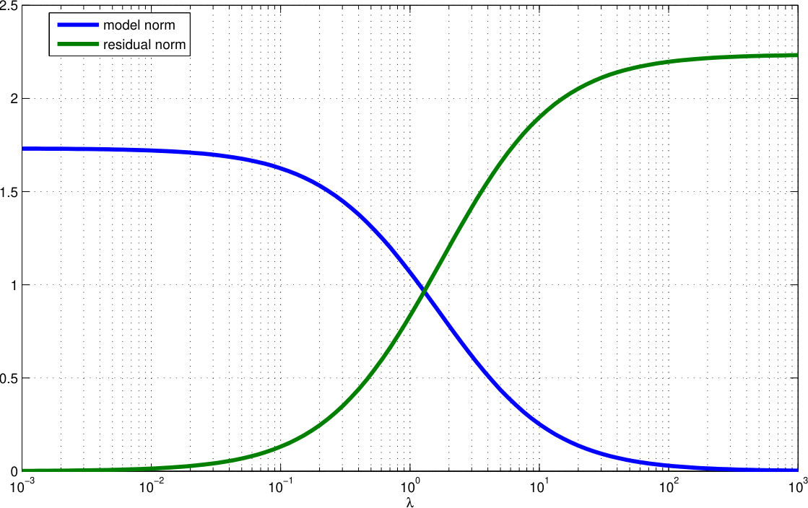
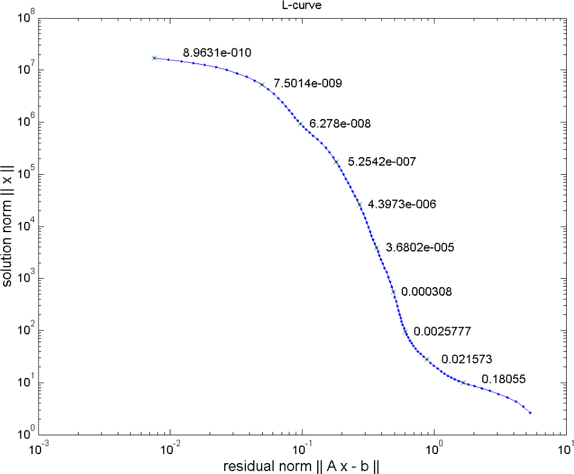

5 Regularization
5.1 Regularization basics
- making under-determined and ill-posed problems unique (regular)
- make the model less sensible to small changes (noise) in data
- adding our assumptions or knowledge (valid ranges, prior data, geostatistical behaviour, interfaces)
Of all possible models, choose the simplest! How to define simple?
In total, we are adding equations to the underdetemined system:
\[ \vb G = \mqty(1 & 1 & 0 \\ 0 & 0 & 1) \Rightarrow \tilde{\vb G} \]
- \(d_1\) measures the mean value of \(m_1\) and \(m_2\)
- size of subvector [\(m_1\), \(m_2\)] should be small
\[ \tilde{\vb G} \vb m =\mqty(1 & 1 & 0 \\ 0 & 0 & 1\\ \textcolor{red}1 & 0 & 0 \\ 0 & \textcolor{red}1 & 0) = \mqty(d_1\\ d_2\\0\\0) \]
There is a couple of different choices
5.1.1 Minimum norm solution
All model parameters are expected to be (similarly) small
\[ \tilde{\vb G}\vb m=\mqty(1 & 1 & 0 \\ 0 & 0 & 1\\ 1 & 0 & 0\\ 0 & 1 & 0\\ 0 & 0 & 1) \vb m = \mqty(d_1\\ d_2\\ d_3\\ d_4\\ d_5) = \mqty(d_1\\ d_2\\ m^P_1\\ m^P_2\\ m^P_3) \]
or close to some prior knowledge (\(d_3\), \(d_4\), \(d_5\))
5.2 Regularization basics: adding equations
\[ \vb G = \mqty(1 & 1 & 0 \\ 0 & 0 & 1) \tilde{\vb G}\]
- we only measure the mean value of \(m_1\) & \(m_2\) (as well as \(m_3\))
- difference between \(m_1\) and \(m_2\) should be small
\[ \tilde{\vb G} \vb m=\mqty(1 & 1 & 0 \\ 0 & 0 & 1\\ \textcolor{red}{-1} & \textcolor{red}1 & 0) = \mqty(d_1\\ d_2\\0) \]
5.3 Smoothness constraints
Gradient (roughness) between neighboring model parameters
\[ \tilde{\vb G} \vb m = \mqty(1 & 1 & 0 \\ 0 & 0 & 1\\ -1 & 1 & 0\\ 0 & -1 & 1) = \mqty(d_1\\ d_2\\0\\ 0) \]
5.4 Regularization scheme
\(\tilde{\vb G}\) consists of forward part & constraints part
\[ \tilde{\vb G}=\mqty[\vb G \\ \vb C] \quad\text{and}\quad \tilde{\vb d} = \mqty[\vb d \\ \vb c] \]
now over-determined \(\Rightarrow\) least-squares solution \((\tilde{\vb G}^T\vb G)^{-1}\tilde{\vb G}^T \tilde{\vb d}\)
\[ \tilde{\vb G}^T \tilde{\vb G} = \vb G^T \vb G + \vb C^T \vb C \quad,\quad \tilde{\vb G}^T \tilde{\vb d}= \vb G^T \vb d + \vb C^T \vb c \]
\[ \vb m = (\vb G^T \vb G + \vb C^T \vb C)^{-1} (\vb G^T \vb d + \vb C^T \vb c) \]
5.5 Weighting data vs. constraints
\(\vb d\) & \(\vb c\) may have completely different magnitudes & physical units, data/constraints maybe too weak or too strong
\(\Rightarrow\) weighting of constraints by regularization parameter \(\lambda\):
\[ \Phi = \|\vb G \vb m - \vb d\|^2 + \lambda \|\vb C \vb m - \vb c \|^2 = \Phi_d + \lambda\Phi_m \rightarrow \min \]
\(\lambda\)..regularization strength, \(\Phi_d\)/\(\Phi_m\)..data/model objective function
\[ \Rightarrow \vb m = (\vb G^T \vb G + \lambda \vb C^T \vb C)^{-1} (\vb G^T \vb d + \lambda\vb C^T \vb c) \]
5.6 Interpretation as constrained minimization (Lagrangian)
\[ \Phi = \|\vb G \vb m - \vb d\|^2 + \lambda \|\vb C \vb m - \vb c \|^2 \rightarrow \min \]
\[ \tilde\Phi = \|\vb C \vb m - \vb c \|^2 + \mu \|\vb G \vb m - \vb d\|^2 = \Phi_m+\mu\Phi_d \rightarrow \min \]
Minimize regularization term under constraint (Lagrangian method)
Minimize the non-simplicity subject to \(\Phi_d\) reflects noise
5.7 Model and data norms

5.8 The L-curve

Data vs. model norm for wide range of \(\lambda\)
- low data residual achieved by high norm (oscillating model)
- low model norm cannot fit the data (large misfit)
- optimum somewhere “at the corner” (not always a corner)
5.9 Choice of regularization strength
- use different values and look at models (and misfit)
- try to determine the corner of the L-curve (maximum curvature)
- start large \(\lambda\), decrease & stop when data misfit show no systematics
Choose the highest \(\lambda\) value that is able to fit the data (\(\chi^2\)=1)!
5.10 Damped normal equations and SVD
\[ \vb C = \vb I, \vb c=0 \quad\Rightarrow\quad \vb m = (\vb G^T\vb G + \lambda \vb I)^{-1} \vb G^T \vb d \]
\[ \vb m = (\vb V \vb \Sigma \vb U^T \vb U \vb \Sigma \vb V^T + \lambda \vb I)^{-1} \vb V \vb \Sigma \vb U^T \vb d \]
\[ \vb m = (\vb V \mbox{diag}(s_i^2+\lambda) \vb V^T + \lambda \vb I)^{-1} \vb V \vb \Sigma \vb U^T \vb d \]
\[ \vb m = \sum\limits_i^r \frac{s_i}{s_i^2+\lambda} \vb u_i^T \vb d \cdot v_i^T = \sum\limits_i^r \frac{s_i^2}{s_i^2+\lambda} \frac{\vb u_i^T \vb d}{s_i} v_i^T \]
Small singular values are damped in inversion, large unchanged
5.11 Resolution of regularized inverse problems
For \(c=0\) we have \(\vb G^\dagger=(\vb G^T \vb G + \lambda \vb C^T \vb C)^{-1} \vb G^T\)
\[ \Rightarrow \vb R^M=\vb G^\dagger \vb G=(\vb G^T \vb G + \lambda \vb C^T \vb C)^{-1} \vb G^T \vb G \]
approaches \(\vb I\) for \(\lambda\rightarrow 0\) and deviates if \(\lambda\) grows
5.12 Wrap up
- SVD provides a general tool, BUT:
- ill-conditioned inverse problems (SV spectrum) tend to amplify noise
- truncated SVD is a method so suppress this
- regularization can (also) be done to make solution unique
- different strategies: smoothness, norm, …
- choice of regularization strength \(\lambda\) is vital
6 Application
6.1 Damped least squares and SVD
\[ \vb m = (\vb G^T\vb G + \lambda \vb I)^{-1} \vb G^T \vb d \]
\[ \vb m = (\vb V \vb \Sigma \vb U^T \vb U \vb \Sigma \vb V^T + \lambda \vb I)^{-1} \vb V \vb \Sigma \vb U^T \vb d \]
\[ \vb m = (\vb V \mbox{diag}(s_i^2+\lambda) \vb V^T)^{-1} \vb V \vb \Sigma \vb U^T \vb d \]
\[ \vb m = \sum\limits_i^r \frac{s_i}{s_i^2+\lambda} \vb u_i^T \vb d \cdot \vb v_i = \sum\limits_i^r \frac{s_i^2}{s_i^2+\lambda} \frac{\vb u_i^T \vb d}{s_i} \vb v_i = \sum\limits_i^r f_i \frac{\vb u_i^T \vb d}{s_i} \vb v_i \]
Small singular values are damped by filter factors \(f_i=s_i^2/(s_i^2+\lambda)\)
6.2 Filter factors

6.3 Inversion with damping


6.4 Choosing \(\lambda\): Data and model norm

6.5 The L-curve

6.6 Resolution of regularized inverse problems
For \(c=0\) we have \(\vb G^\dagger=(\vb G^T \vb G + \lambda \vb C^T \vb C)^{-1} \vb G^T\)
\[ \Rightarrow \vb R^M=\vb G^\dagger \vb G=(\vb G^T \vb G + \lambda \vb C^T \vb C)^{-1} \vb G^T \vb G \]
approaches \(\vb I\) for \(\lambda\rightarrow 0\) and deviates if \(\lambda\) grows
6.7 Resolution for damped normal equations
\[ \vb R^M = \vb V \cdot \mbox{diag}(f_i) \cdot \vb V^T \]
\[ \vb R^D = \vb U \cdot \mbox{diag}(f_i) \cdot \vb U^T \]
\(\Rightarrow\) like for TSVD with \(f_i=[1, \ldots, 1, 0, \ldots, 0]^T\)
\[ \vb R^M = \vb V_p \vb V_p^T \quad\mbox{and}\quad \vb R^D = \vb U_p \vb U_p^T \]
\[ \vb R^M-\vb I = \vb V_p \vb V_p^T - \vb V \vb V^T = -\vb V_0 \vb V_0^T \]
6.8 Inversion with smoothness constraints


6.9 Smoothness constraints: Data and model norm

6.10 Smoothness constraints: The L-curve